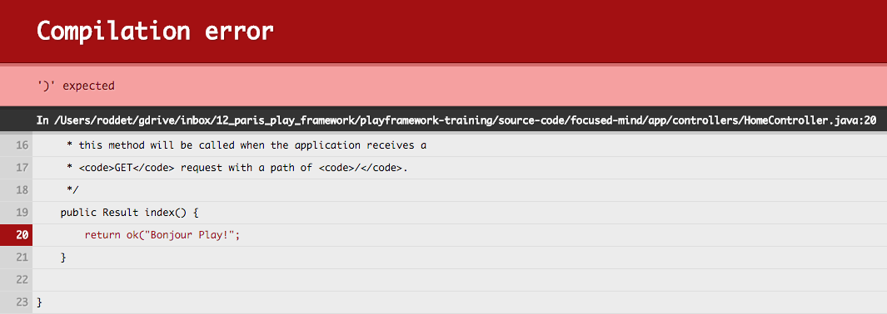
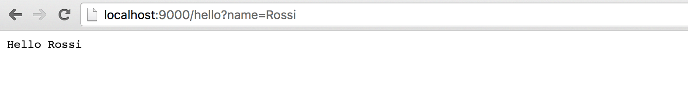
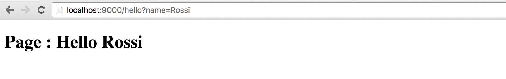

TP #2 - SBT
La console intéractive
- Depuis la racine du projet, lancer la commande sbt.
La console interactive se lance :
focused-mind> sbt
[info] Loading project definition from /Users/roddet/gdrive/inbox/02_paris_play_framework/travaux-pratiques/focused-mind/project
[info] Set current project to focused-mind (in build file:/Users/roddet/gdrive/inbox/02_paris_play_framework/travaux-pratiques/focused-mind/)
[focused-mind] $
Pour Intellij, vous avez un onglet
sbt shellqui permet de lancer la console intéractive.
- Demander la compilation du projet
[focused-mind] $ compile
[success] Total time: 0 s, completed Jan 18, 2016 11:57:43 AM
- Démarrer l'application en mode développement
[focused-mind] $ run
--- (Running the application, auto-reloading is enabled) ---
[info] p.c.s.NettyServer - Listening for HTTP on /0:0:0:0:0:0:0:0:9000
(Server started, use Ctrl+D to stop and go back to the console...)
[info] - play.api.Play - Application started (Dev)
Arrêter l'application avec CTRL + D.
Exécuter les tests de l'application
[focused-mind] $ test
[info] Compiling 2 Java sources to /Users/roddet/gdrive/inbox/02_paris_play_framework/travaux-pratiques/focused-mind/target/scala-2.11/test-classes...
[info] /Users/roddet/gdrive/inbox/02_paris_play_framework/travaux-pratiques/focused-mind/test/ApplicationTest.java: /Users/roddet/gdrive/inbox/02_paris_play_framework/travaux-pratiques/_focused-mind/test/ApplicationTest.java uses or overrides a deprecated API.
[info] /Users/roddet/gdrive/inbox/02_paris_play_framework/travaux-pratiques/focused-mind/test/ApplicationTest.java: Recompile with -Xlint:deprecation for details.
[info] - application - Creating Pool for datasource 'default'
[info] - application - Shutting down connection pool.
[error] Test IntegrationTest.test failed: null, took 2.908 sec
[error] Failed: Total 3, Failed 1, Errors 0, Passed 2
[error] Failed tests:
[error] IntegrationTest
[error] (test:test) sbt.TestsFailedException: Tests unsuccessful
[error] Total time: 5 s, completed Jan 18, 2016 12:04:05 PM
Lancer la console scala
[focused-mind] $ console
[info] Starting scala interpreter...
[info]
Welcome to Scala version 2.11.6 (Java HotSpot(TM) 64-Bit Server VM, Java 1.8.0_45).
Type in expressions to have them evaluated.
Type :help for more information.
scala>
Evaluer du code
scala> views.html.index()
res1: play.twirl.api.HtmlFormat.Appendable =
<!DOCTYPE html>
<html lang="en">
<head>
<title>Welcome to Play</title>
<link rel="stylesheet" media="screen" href="/assets/stylesheets/main.css">
<link rel="shortcut icon" type="image/png" href="/assets/images/favicon.png">
</head>
<body>
<h1>Welcome to Play!</h1>
<script src="/assets/javascripts/main.js" type="text/javascript"></script>
</body>
</html>
Sortir de la console.
scala> :quit
Exécuter l'application :
[focused-mind] $ ~run
Erreurs de compilation
Modifier le fichier app/controllers/HomeController.java comme suit :
public class HomeController extends Controller {
public Result index() {
return ok("Bonjour Play!");
}
}
Rafraichisser la page du navigateur.

Introduire une erreur de compilation Java dans le fichier app/controllers/HomeController.java.
Rafraichisser la page du navigateur.

Corriger l'erreur de compilation.
Rafraichisser la page. Il ne doit plus avoir d'erreur.
Compilation des routes
Depuis le navigateur, accéder à la page http://localhost:9000/hello.

Ajouter une méthode au fichier app/controllers/HomeController.java :
public Result hello(String name) {
return ok("Hello " + name);
}
Ajouter la ligne suivante au fichier conf/routes :
GET /hello controllers.HomeController.hello(name:String)
Accéder à la page http://localhost:9000/hello

Accéder à la page http://localhost:9000/hello?name=Rossi

Introduire une erreur dans le fichier conf/routes puis accéder à la page http://localhost:9000/hello?name=Rossi.

Corriger l'erreur introduite.

Créer une vue
- Créer un fichier app/views/hello.scala.html avec le contenu suivant :
@(name:String)
<!doctype html>
<html>
<head>
<meta charset="UTF-8">
<title>Page Hello</title>
</head>
<body>
<h1>Page : Hello @name</h1>
</body>
</html>
Intellij : clic droit sur le répertoire
viewspuisNew > Play 2 Template.
- Modifier la méthode app.controllers.HomeController.hello(String) comme suit :
public Result hello(String name) {
return ok(views.html.hello.render(name));
}
- Accéder à la page
http://localhost:9000/hello?name=Rossi.
